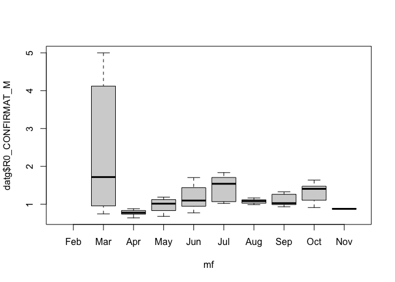

The learning objectives for this practical are:
To do this practical you need an installation of R and RStudio. You can find the instructions in the setup link on how to install R and RStudio in your system. For a smooth development of this practical, it is strongly recommended that you follow and finish the previous seminar 4 on how to get started with R and RStudio.
We will download some COVID19 data to illustrate the use of R and RStudio. Please follow the next two steps:
practical7 and copy in it
the downloaded file.catalunya_setmanal.csv in the directory
practical7.If you are using the UPF myapps cloud to run RStudio, then you need to either use an internet browser in myapps to download the data file directly in the myapps cloud or upload to the myapps cloud the file that you have downloaded in your own computer.
We may often use an interactive R session to quickly examine data or
make some straightforward calculations. In such an interactive session,
we can also recover previous instructions in the R shell by pressing the
upwards arrow key. However, if we really want to keep track
of the R commands we are using, we should write them in a text file with
filename extension .R, which we shall refer hereafter as an
R script.
There are two main ways to create an R script: (1) opening a new file
with a text editor and saving it with filename that includes the
.R extension, or (2) if we are working with RStudio, then
we click on the File menu and select the options
New File -> R Script. When we do that we
should be getting the RStudio window splitted in four panes, the default
three ones and one additional one for the newly created R script, as
shown in the captured window below.
Type in the newly created R script (either with a text editor or with
RStudio) the following two lines to read the CSV file downloaded in the
previous section. The first line is a comment. Lines starting with the
# symbol are comments in R.
> ## read COVID19 data
> dat <- read.csv("catalunya_setmanal.csv", sep=";", stringsAsFactors=TRUE)Now save the R script in the directory practical7 under
the filename covid19analysis.R.
To execute a specific line of an R script in RStudio you should move
the cursor to that line in the pane with the script file and press the
key combination Ctrl+Enter. Alternatively, you can also
copy and paste the line from the script to the R shell, specially if you
are not working with RStudio.
The previous line may produce an error if the current working
directory of R is not pointing to the directory where the file
catalunya_setmanal.csv is; see previous seminar 4 if you need to find out how to change
the working directory in R and RStudio. In general, changing the working
directory should be always performed in the R shell and
NEVER include the instruction that changes the working
directory in an R script. The reason is because you or somebody else may
want to run that script in a different computer where the directory with
the data may be called differently.
You can examine the first 6 rows of the loaded CSV file with the
head() function as follows:
> head(dat)
NOM CODI DATA_INI DATA_FI RESIDENCIA IEPG_CONFIRMAT
1 CATALUNYA GLOBAL 2022-07-15 2022-07-21 No 187.601
2 CATALUNYA GLOBAL 2022-07-15 2022-07-21 -- NA
3 CATALUNYA GLOBAL 2022-07-15 2022-07-21 Si NA
4 CATALUNYA GLOBAL 2022-07-14 2022-07-20 -- NA
5 CATALUNYA GLOBAL 2022-07-14 2022-07-20 Si NA
6 CATALUNYA GLOBAL 2022-07-14 2022-07-20 No 200.843
R0_CONFIRMAT_M IA14 TAXA_CASOS_CONFIRMAT CASOS_CONFIRMAT TAXA_PCRTAR
1 0.724464 258.9509 96.5973 7517 532.9241
2 NA 0.0000 0.0000 333 0.0000
3 NA 1444.1909 511.7315 388 8435.6576
4 NA 0.0000 0.0000 344 0.0000
5 NA 1539.1514 526.2394 399 8899.9089
6 0.720702 278.6764 104.7446 8151 556.1064
PCR TAR PERC_PCRTAR_POSITIVES INGRESSOS_TOTAL INGRESSOS_CRITIC EXITUS
1 23345 18126 26.9389 1170 115 95
2 1945 1078 10.0000 78 5 0
3 4947 1449 19.7034 119 1 35
4 1966 1230 9.8637 95 5 0
5 5370 1378 19.0199 118 1 45
6 23921 19354 27.7685 1251 110 114
CASOS_PCR CASOS_TAR POSITIVITAT_PCR_NUM POSITIVITAT_TAR_NUM
1 1869 5648 2054 4577
2 141 192 141 150
3 176 212 181 191
4 155 189 155 149
5 188 211 195 197
6 2007 6144 2204 4930
POSITIVITAT_PCR_DEN POSITIVITAT_TAR_DEN VACUNATS_DOSI_1 VACUNATS_DOSI_2
1 14209 10406 791 2962
2 1863 1047 30 9
3 1431 457 4 13
4 1882 1200 26 9
5 1626 435 7 12
6 14574 11117 809 3046Exercise: now add to the script
covid19analysis.R the following two lines to obtain a new
data.frame object called datg that includes
only data from the general population, i.e., excluding data from
geriatric residences. You have to figure out the code that replaces de
questions marks ??????.
> mask <- ??????
> datg <- dat[mask, ]Once you subset data, it is always convenient to compare the
dimensions of the original and resulting object, using the function
dim(), and think whether the difference in dimensions makes
sense (e.g., subsetting should always lead to a smaller object in some
dimension).
These are the first 6 rows of the filtered data.frame
object you should have obtained from the previous exercise:
> head(datg)
NOM CODI DATA_INI DATA_FI RESIDENCIA IEPG_CONFIRMAT
1 CATALUNYA GLOBAL 2022-07-15 2022-07-21 No 187.601
6 CATALUNYA GLOBAL 2022-07-14 2022-07-20 No 200.843
7 CATALUNYA GLOBAL 2022-07-13 2022-07-19 No 217.662
12 CATALUNYA GLOBAL 2022-07-12 2022-07-18 No 237.641
15 CATALUNYA GLOBAL 2022-07-11 2022-07-17 No 264.243
16 CATALUNYA GLOBAL 2022-07-10 2022-07-16 No 275.007
R0_CONFIRMAT_M IA14 TAXA_CASOS_CONFIRMAT CASOS_CONFIRMAT TAXA_PCRTAR
1 0.724464 258.9509 96.5973 7517 532.9241
6 0.720702 278.6764 104.7446 8151 556.1064
7 0.718076 303.1181 113.3544 8821 583.6323
12 0.719925 330.0914 123.6991 9626 616.6453
15 0.721174 366.4070 137.6162 10709 659.2191
16 0.725143 379.2447 143.1934 11143 672.8920
PCR TAR PERC_PCRTAR_POSITIVES INGRESSOS_TOTAL INGRESSOS_CRITIC EXITUS
1 23345 18126 26.9389 1170 115 95
6 23921 19354 27.7685 1251 110 114
7 24735 20682 28.5630 1323 112 122
12 25818 22168 29.5743 1371 111 121
15 26955 24344 30.5689 1460 114 127
16 27246 25117 30.9685 1498 114 142
CASOS_PCR CASOS_TAR POSITIVITAT_PCR_NUM POSITIVITAT_TAR_NUM
1 1869 5648 2054 4577
6 2007 6144 2204 4930
7 2141 6680 2351 5355
12 2317 7309 2569 5852
15 2505 8204 2724 6598
16 2573 8570 2794 6879
POSITIVITAT_PCR_DEN POSITIVITAT_TAR_DEN VACUNATS_DOSI_1 VACUNATS_DOSI_2
1 14209 10406 791 2962
6 14574 11117 809 3046
7 15064 11915 788 3215
12 15679 12795 790 3347
15 16437 14058 785 3355
16 16675 14560 818 3415It has two columns with date information (DATA_INI and
DATA_FI), corresponding to the begining and end of the
7-day period of the data of that row, but which are stored as string
character vectors (more specifically as factors). However,
R provides a way to store dates as such and this has the advantage that
facilitates manipulating them for analysis purposes.
For instance, to transform the two columns containing date data we
should use the function as.Date() as follows:
> startdate <- as.Date(datg$DATA_INI)
> enddate <- as.Date(datg$DATA_FI)While R displays these objects as vectors of character strings, they do belong to a different class of objects, the class Date.
> head(startdate)
[1] "2022-07-15" "2022-07-14" "2022-07-13" "2022-07-12" "2022-07-11"
[6] "2022-07-10"
> class(startdate)
[1] "Date"
> head(enddate)
[1] "2022-07-21" "2022-07-20" "2022-07-19" "2022-07-18" "2022-07-17"
[6] "2022-07-16"
> class(enddate)
[1] "Date"Having dates stored as Date-class objects facilitates operations on dates such as calculating time differences:
> head(enddate - startdate + 1)
Time differences in days
[1] 7 7 7 7 7 7or subsetting data for a period of time. For instance, let’s subset the data, selecting rows corresponding to data between January and November from 2020, the year in which the COVID19 pandemic started:
> mask <- startdate >= as.Date("2020-01-01") & enddate <= as.Date("2020-11-30")
> sum(mask)
[1] 275
> datg20 <- datg[mask, ]
> dim(datg20)
[1] 275 25Note that the number of TRUE values in the logical mask
matches the resulting number of rows in the subsetted object
datg20.
Date data also allows one to easily extract the month of each date:
> startdate <- as.Date(datg20$DATA_INI)
> m <- months(startdate, abbreviate=TRUE)
> head(m)
[1] "Nov" "Nov" "Nov" "Nov" "Nov" "Nov"
> class(m)
[1] "character"where we have to use the argument abbreviate=TRUE in the
months() function to obtain a vector of equally sized
character strings, which may be useful for visualization purposes.
Important: The previous vector m may
contain the names of the months in a different language than English
when the regional configuration of your operating system, known as locale
configuration, is also different to English. In such a case, it may
be handy to switch at least the regional time configuration to English,
to facilitate following the rest of this practical. To do that, type the
following instruction on the R shell:
> Sys.setlocale("LC_TIME", "C")and then type again:
> m <- months(startdate, abbreviate=TRUE)Verify that now the vector m has the month names in
English.
Factors in R are a class of objects that serve the purpose of storing what is known in statistics as a categorical variable, which is a variable that takes values from a limited number of categories, also known as levels. So factors are pretty much like vectors of character strings, but with additional information about what are the different values that may occur on those vectors.
Not all vectors of character strings are suitable to become factors. For instance, a vector of character strings corresponding to gene identifiers tipically should not become a factor in R, because those identifiers do not represent any kind of category grouping observations.
Factors are useful, however, in the context of a statistical analysis
and data visualization, involving categorical variables. To create a
factor object we should call the function factor() giving a
vector of character strings as argument. Let’s consider converting the
previous vector m of character strings to a factor.
> mf <- factor(m)
> head(mf)
[1] Nov Nov Nov Nov Nov Nov
Levels: Apr Aug Feb Jul Jun Mar May Nov Oct SepWe can see that R displays factors differently to character strings,
by showing the values without double quotes (") and
providing additional information about the possible levels of
that factor. We can access the level information from a factor object
with the functions levels() and nlevels().
> levels(mf)
[1] "Apr" "Aug" "Feb" "Jul" "Jun" "Mar" "May" "Nov" "Oct" "Sep"
> nlevels(mf)
[1] 10Sometimes, we may want the levels of a factor to comprise a set of
specific values or to be ordered in a specific way. This could be the
case of the previous factor mf, where we would like for
instance to have the levels corresponding to the months of the year and
chronologically ordered. We can do that as follows:
> mf <- factor(m, levels=c("Jan", "Feb", "Mar", "Apr", "May", "Jun",
+ "Jul", "Aug", "Sep", "Oct", "Nov", "Dec"))
> head(mf)
[1] Nov Nov Nov Nov Nov Nov
Levels: Jan Feb Mar Apr May Jun Jul Aug Sep Oct Nov Dec
> levels(mf)
[1] "Jan" "Feb" "Mar" "Apr" "May" "Jun" "Jul" "Aug" "Sep" "Oct" "Nov" "Dec"
> nlevels(mf)
[1] 12Important: The previous call to the
factor() function will only work if your
regional time configuration is English. If you are working with a
non-English regional time configuration, you should change the level
names in the argument levels to the language that you are
using.
Now, we can build a contingency table of the level occurrences of a
factor using the function table().
> table(mf)
mf
Jan Feb Mar Apr May Jun Jul Aug Sep Oct Nov Dec
0 6 31 30 31 30 31 31 30 31 24 0 We can see, there is no data in 2020 for the months of January
(because data was not yet recorded) and December (because it is outside
the period we have subsetted the data). We can remove levels of a factor
for which there is no data with the function
droplevels().
> mf <- droplevels(mf)
> levels(mf)
[1] "Feb" "Mar" "Apr" "May" "Jun" "Jul" "Aug" "Sep" "Oct" "Nov"
> table(mf)
mf
Feb Mar Apr May Jun Jul Aug Sep Oct Nov
6 31 30 31 30 31 31 30 31 24 Using this factor we can easily visualize the distribution of the
column R0_CONFIRMAT_M (R0 basic
reproduction number) as function of the month, calling plot with the
formula notation x ~ y (add this plotting instruction to
the covid19analysis.R script):
> plot(datg20$R0_CONFIRMAT_M ~ mf)
where here datg20 refers to the subset of the original
data.frame object dat, excluding data from
geriatric residences and including only data between January and
November 2020, and mf refers to the factor object with the
months from that subset of data. The resulting plot contains so-called
box plots for each
month, which allow to visualize the location of the data in terms of quartiles.
We can see that February has no data points for the column
R0_CONFIRMAT_M despite there are data rows for that month.
To find out why we do not see any data on the plot we can inspect the
values of R0_CONFIRMAT_M for the month of February as
follows:
> mask <- mf == "Feb"
> datg20$R0_CONFIRMAT_M[mask]
[1] NA NA NA NA NA NAThe value NA in R means not available and R
treats it in a special way depending on the operation that is
performing. In the case of plots, NA values are
ignored.
Exercise: look up in the help page of the
plot() function, how can you change the labels for the
x and y axes to a readable label whose meaning
stands alone and minimally describes the data visualized in that axis.
The resulting plot should be identical to the one above, but with the
axes labels changed.
Exercise: produce the same kind of plot, but this
time showing in the y-axis the values of the column
IEPG_CONFIRMAT, corresponding to the effective potential
growth also known as risk of outbreak. Can you identify the month in
which this risk has increased the most?
> ## plot risk of outbreak as function of the month
> plot(datg20$IEPG_CONFIRMAT ~ mf, xlab="Month", ylab="Risk of outbreak")